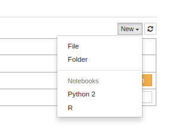

Multi-Language IPython (Jupyter) setup
Multi-Language IPython (Jupyter) setup

The IPython notebook project (which I adore) is about to be renamed to Jupyter to better reflect the fact that it can be used with other languages besides Python. At the moment that is under heavy development and probably quite unstable but I found myself aching for an IR-Notebook. So here is a guide to set up a multi-language Jupyter notebook (meaning that you just start the server and can select if you want an R-Notebook, a Python-notebook, or one of the other availabel kernels).
Note that the instructions on this page are likely to break since they depend on early development versions of the different packages. I expect that the whole procedure is going to be faciliated/documented once the Jupyter project gets going.
At first, we set up a bleeding-edge ipython (this is from a bare bones python installation):
# setup pip
wget https://bootstrap.pypa.io/get-pip.py
sudo python get-pip.py
# make a virtualenv
sudo pip install virtualenv
cd ~
virtualenv local/python/jupyter
source local/python/jupyter/bin/activate
## get the cutting edge ipython version
git clone --recursive https://github.com/ipython/ipython.git
# and install all its dependencies
cd ipython
pip install -e ".[notebook]" You can run the notebook with
ipython notebookwhile you are in the virtualenv. Stay in the virtualenv for the rest of the setup.
Adding R
For adding R-support, you need the experimental IRKernel. Just follow the instructions in the `README`:
Install dependencies:
sudo apt-get install libzmq3-dev libcurl4-openssl-devfire up R and
install.packages("devtools")
# Need RCurl for install_github
install.packages('RCurl')
library(devtools)
install_github('armstrtw/rzmq')
install_github("takluyver/IRdisplay")
install_github("takluyver/IRkernel")
IRkernel::installspec() In my case the last line failed with permission problems. The code of IRkernel::installspec is as follows:
function ()
{
srcdir = system.file("kernelspec", package = "IRkernel")
cmd = paste("ipython kernelspec install --replace --name ir",
srcdir, sep = " ")
system(cmd, wait = TRUE)
}so the function basically makes a system call to ipython kernelspec to install the kernel that is located in srcdir. You can find out the value of srcdir by running the first line of the function
print(system.file("kernelspec", package = "IRkernel"))(in my case the path was /home/mittner/R/x86_64-unknown-linux-gnu-library/3.1/IRkernel/kernelspec).
Now exit R and run the command by hand (supplemented by "--user" to install the kernel in the users directory instead of globally -- that was what caused the permission problem):
ipython kernelspec install --replace --name ir --user /home/mittner/R/x86_64-unknown-linux-gnu-library/3.1/IRkernel/kernelspecNow fire up the notebook and voila:
and by creating an R-notebook, you have the RNotebook:
Finally, it's possible to add more kernels for example for Julia in a similar way.